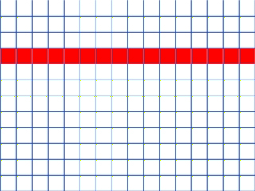
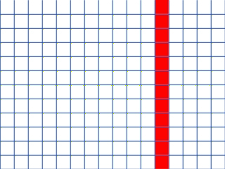
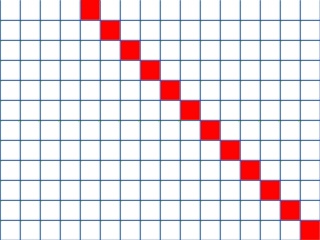
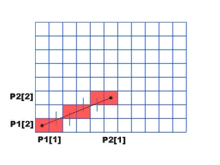
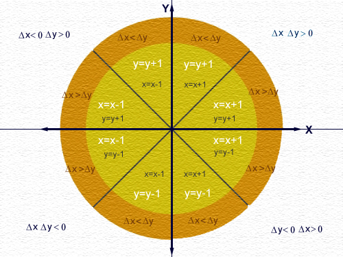
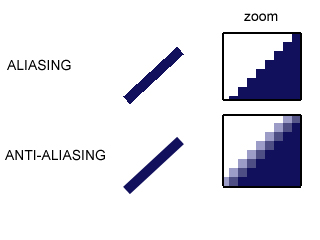

Donat un segment de recta definit per dos punts P1 i P2, en coordenades de dispositiu, ens proposem aproximar-lo per un conjunt de pixels. Posarem com a requeriment que el conjunt discret s'aproximi al màxim a la recta analògica i que el seu aspecte visual mantingui continuitat visual i gruix constant. Lleugeres variants dels algorismes permeten variar el gruix dels segments i el seu tipus (continu, a ratlles, ...), és a dir, tenir en consideració els atributs. Cal recordar que els vèrtexs P1 i P2 ja estan discretitats.
Analitzarem primer la rasterització de rectes d'orientacions privilegiades i després d'orientació qualsevol.
La rasterització de segments horitzontals és molt simple, òbviament cal illuminar tots els pixels de la línia d'escombrat que conté el segment des de la rasterització dels vèrtexs inicial fins al final. En la figura teniu un exemple animat que simula el pintat dels píxels (en una pantalla de baixa resolució).
accio Rasteritza_Segment_Horitzontal (P1,P2,color)
per i en P1[1]..P2[1] fer
setPixel(i,P1[2],color)
fper
faccio
|  |
Per segments verticals, l'algorisme seria similar però en cada pas s'incrementaria (decrementaria, en funció ordenada vèrtexs inicial) el valor de l'ordenada en una unitat. En rectes d'inclinació 45º, en cada iteració s'incrementaria (decrementaria) el valor de les coordenades x i y del pixel en una unitat partint del vèrtex inicial fins a arribar al final. Veure exemples en les figures animades següents.
|   |
Per a rectes d'inclinació qualsevol, l'algorisme més utilitzat és el de Bresenham. Aquest algorisme aconsegueix segments discretitzats amb un aspecte visual continu i amb brillantor uniforme, a més a més, com a úniques operacions aritmètiques utilitza sumes, restes i multiplicacions per 2, motiu pel qual és molt indicat per a ser programat en hardware. A continuació explicarem breument el funcionament de l'algorisme.
Anomenen incr_x=|P2[1]-P1[1]| i incr_y=|P2[2]-P1[2]|, partint del vèrtex inicial (pixel inicial) i en sentit cap al vèrtex final (pixel final), sempre il·luminarem (pintarem) pixels veïns (es vol continuitat visual) incrementant (o decrementant segons l'orientació del segment) en una unitat la coordenada corresponent al màxim(incr_x,incr_y) (és a dir en l'eix de coordenades de màxim recorregut). Sovint hi haurà dos possibles pixels candidats: un situat a la mateixa línia d'escombrat i altra en la següent (superior o inferior segons l'orientació del segment). Escollirem el que les seves coordenades minimitzin la distància a la recta analògica en la direcció perpendicular a la de avançament. Fixeu-vos que amb aquesta metodologia s'aconsegueix continuitat entre els pixels seleccionats i que la distribució dels pixels sigui uniforme a l'entorn del segment (per a cada increment en la direcció de màxim recorregut es visualitza un únic píxel).
La figura animada següent mostra un exemple de l'execució de l'algorisme:
|  |
L'aportació de l'algorisme de Bresenham és el criteri de selecció del pixel següent a il·luminar que s'aconsegueix simplement analitzant el signe d'una variable entera (p en el nostre algorisme). Segons sigui positiu o negatiu indica quin dels 2 pixels veïns candidats a ser il·luminats minimitza l'error.
A continuació es mostra l'algorisme per a segments amb pendent positiva i menor que la unitat (|incr_x| > |incr_y| i incr_x>0 i incr_y>0). En aquest cas sempre s'incrementarà la coordenada x i la y s'incrementarà, si s'escau.
accio Rasteritza_Segment (P1,P2,color)
// segment amb pendent positiva menor que 1
// altres orientacions modifiquen les inicialitzacions
// de les variables
incrx:= |P2[1]-P1[1]|
incry:= |P2[2]-P1[2]|
p:= 2 *incry - incrx
c1:= 2*incry ; c2:= 2*(incry-incrx)
x:= P1[1]; y:= P1[2]
mentre x <= P2[1] fer
setPixel (x,y,color)
x:=x+1
si p<0 llavors p:=p+c1
altrament y:= y+1; p:=p+c2
fsi
fmentre
faccio
Si es modifica la inclinació del segment, l'estructura de l'algorisme es manté, només es modifiquen les inicialitzacions de les variables, la coordenada d'avançament (x o y) i el pas d'increment (+1 o - 1) per a cada coordenada. La figura mostra segons la orientació del segment (suposant el vèrtex inicial en el centre), l'actualització de coordenades en cada iteració. Degut a la simplicitat de l'algorisme i per no haver d'incloure un procés per casos en l'algorisme que disminuiria la seva eficiència, usualment es disposa d'un algorisme específic per cadascuna de les 8 possibles inclinacions
|  |
En els dibuixos mostrats com exemple s'ha exagerat la grandària dels pixels i hom pot observar que els segments es veuen aproximats per una escaleta de punts. En incrementar la resolució del perifèric aquest efecte (anomenat "aliasing" en anglès) disminueix però continua existint i no es possible evitar-ho donat que es degut a la pròpia discretització de punts del dispositiu. Existeixen, algorismes (anomenats d'anti-aliasing) que intenten dissimular a la vista l'aliasing, per fer-ho pinten els pixels a l'entorn dels de la recta d'un color intermig entre el color del fons i el de la recta. S'aconsegueix un efecte de difuminació de color que visualment elimina el contrast entre pixels veïns i dissimula l'efecte escaleta. La figura de l'esquerra mostra el dibuix d'una recta a resolució de dispositiu, es pot observar l'aliasing sobre tot si es fa un zoom de part del segment; a la dreta es mostra la mateixa recta amb antialiasing.
|  |